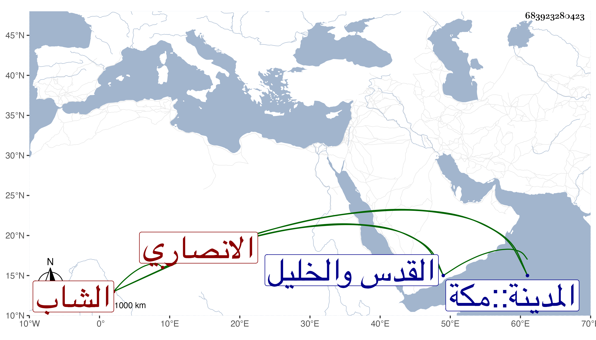

0902Sakhawi.DawLamic.ITO20230111-ara1.EIS1600.683923280423
Biography ID: 683923280423
199
محمد بن محمد بن حسن بن قطيبا الشاب محب الدين بن الرئيس بدر الدين الانصاري المستوفي بالحرمين القدس والخليل . ولد سنة سبعين تقريبا . ومات بعد غروب ليلة الاثنين سلخ ربيع الآخر أو مستهل جمادى الاولى سنة خمس وتسعين وصلى عليه من الغد بعد الظهر تقدم الناس قريبه أبو الحرم القلقشندي ودفن على أبيه بمقابر ماملا واستجاز له الصلاح الجعبري جمعا من شيوخه وقال أنه كان شابا حسنا كثير الملاطفة والتودد كثير التأسف عليه قال ووالده خالي لأمي رحمه الله .
